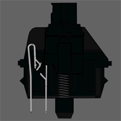

Tipos de teclado
Hay muchos tipos de teclados, estos se dividen en:
- Switches
- Keycaps
- Tamaños
- Distribuciones

Switches RED: Es completamente lineal, con una fuerza de actuación media. Su pulsación es bastante ligera y. de los cuatro grandes, es el que mas se siente como una "pluma".

Switches BLUE: Se trata del que, para la mayoria de personas, caracteriza a los teclados mecanicos, ya que es "clicky". Es decir, tiene ese ruedo de click que todos asocian a un teclado mecanico.

Switches Brown: tiene un sonido más silencioso y está pensado para jugar a videojuegos y para uso ofimático. Tiene un tacto suave y de rendimiento equilibrado y permite pulsar rápidamente teclas de forma sucesiva.

Switches Black: El interruptor más veterano. Los switches Black son los más longevos y aún se usan en a día de hoy. Fue lanzado en 1984 y ha sido usado en millones de teclados desde entonces. Su carácter totalmente lineal y alta fuerza de actuación lo hace una de las elecciones más frecuentes para teclados gaming.
Ahora pasaremos con los keycaps. En los keycaps solo podremos diferenciar los materiales de los que están hechos mas no es lo más importante pues lo que se diferencian unos de otros es los diseños de los mismos.
Un keycap es una tecla es una pequeña cubierta de plástico, metal u otro material que se coloca sobre el interruptor del teclado de una computadora. Las teclas se ilustran a menudo para indicar la función de la tecla o el carácter alfanumérico al que corresponden.
Para comprender realmente qué implicaciones tiene elegir keycaps PBT o ABS, es importante entender en qué consiste cada uno de los tipos. Realmente estamos hablando de tipos de materiales, utilizados no solo para fabricar teclas, sino también otros componentes y piezas de periféricos y demás.
Cuando decimos ABS, nos referimos Acrilonitrilo Butadieno Estireno, aunque seguro que, como nosotros, te has quedado igual. Es algo irónico lo de este material ya que, se supone que es un material catalogado como débil, respecto a su estructura molecular, sin embargo, es muy resistente y duradero, por lo que su utilidad es mayor de lo que en esencia podría parecer.
Por otro lado, tenemos el PBT, Teraflalato de Polibutileno, otro pedazo de nombre que, a la mayoría, no nos explica mucho. La diferencia primordial entre con el material ABS es que, el PBT es más duro, pero la sensación al pulsar una keycap de este material es compleja de describir, muchos la catalogan como “arenosa”. Además, es menos resistente a los golpes, y su uso en fabricación es más costoso que el del ABS.